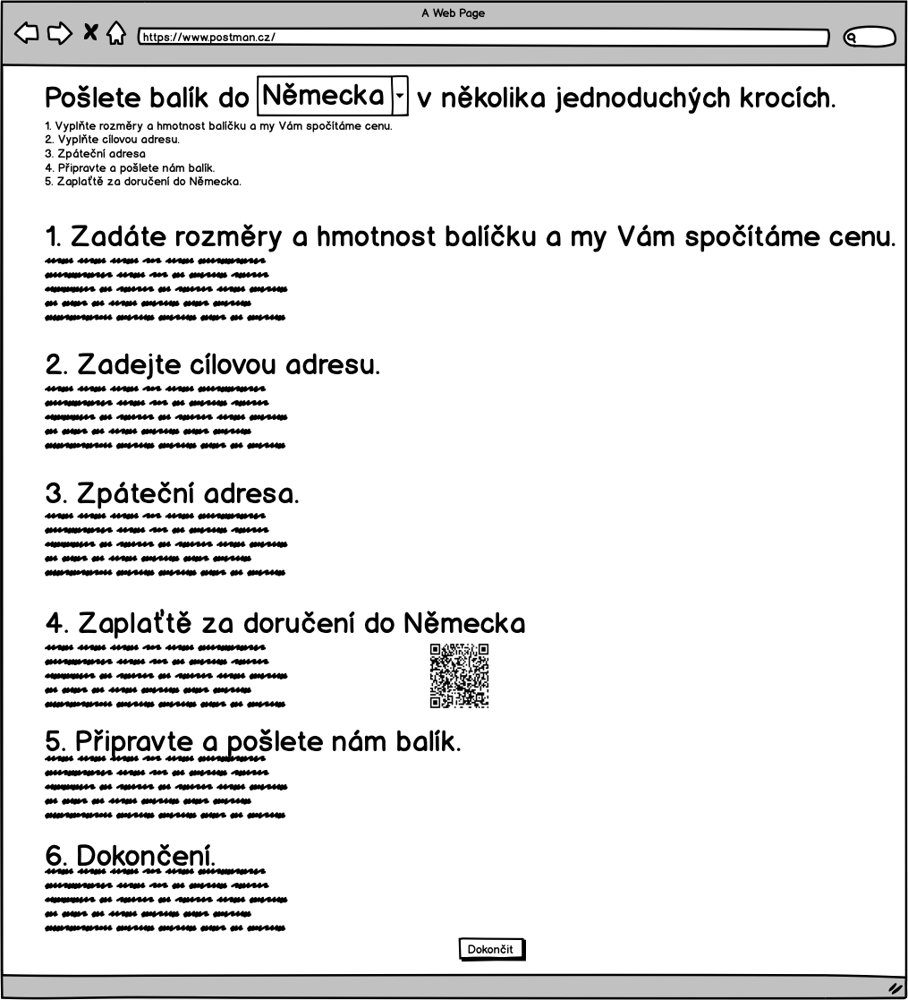
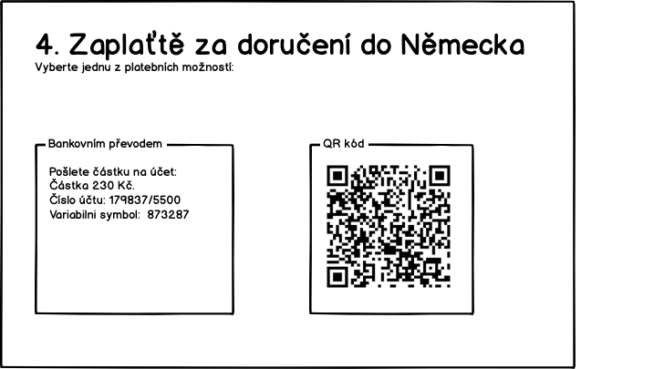

UC-04 Registrovat balík
Zakaznik objednava doruceni na cilovou adresu. Cely proces je rozdeleny do něskolika kroku. Finalne lze cele udelat na jedne strance.
Pokud zákazník nějaké informace vyplní a později se k nim vrátí, pak se mu ty následně vyplněné nesmažou. Například, pokud se dostane na pokyny k zaplacení pak se vrátí a upraví cílovou adresu, pak se mu nesmaže adresa odesílatele.
Pokud se bude realizovat na jedné stránce, pak s vyjimkou cílové země. Pokud jí změní v hlavním nadpisu, pak se mu přepočte stránka s cenu.
Úvod
Na tuto obrazovku přicházi zákazník z vyhledávače. Proto mu můžem předvyplnit zemi. Protoze jsme na to cílili reklamu. Hodnota zeme prichazi jako parametr.

Pokud to budem v době spuštění umět, pak se jméno země objeví jako dropdown box, kde si bude moct cílovou zemi vybrat.
TODO Jaky parametr to bude? Jake ma hodnoty? Nejake kodovani?
TODO Jakou zemi nastavit, pokud zakaznik neprijde prez vyhledavac.
Zákazník zadá rozměry a cílovou zemi
Zjištění ceny je jako první, protože to je to, co ho zajímá nejvíc. Nalákali jsme ho na to.

V dalším kroku zákazník vyplní:
- Šířk výšku a hloubku balíky - hodnoty musí mít vyplněně číslo.
- Hmotnost v Kg - hodnota musi byt vyplnena a musi byt cislo.
Po každé změně jakéhokoliv pole přepočítáme výslednou cenu. Cena je rozhodující parametr pro zákazníka.
TODO Co bude v polich na rozmery a vahu po otevreni formulare?
TODO Jak rict zakaznikovy, ze pokud posila balicek 0.5Kg, ze staci vyplnit 0 Kg?
TODO Zamysleme se, jestli nejak nerict, ze rozmery jsou pribliznes.
TODO Budem u poli kontrolovat nejaky rozumny rozsah? napr.; Vaha musi byt od 0 do 100 Kg?
Zadani cílove adresy
Požádáme o zadání doručovací adresy.

Zakaznik zada cílovou doručovaci adresu. Pouze zvalidujem, že jsou požadovaná pole vyplněná.
TODO navrhuji odstranit, ze to je do nemecka, udelat to pouze jako oznameni, protoze zmenou zeme ovlivnime cenu.
Zadání zpáteční adresy
Zákaznik zada zpatecni adresu. Adresu muzem validovat, ze je vyplnena, ale ne, ze je platna.
Zakaznik zadá:
- Jméno - to vyuzijem pro pripadne zaslani na zpatecni adresu a osloveni v emailech.
- Email - na email budem posilat shrnuti objednavky s instrukcema kam zaplatit a poslat balik
- Telefon - Kdyz se neco pokazi support bude volat, aby domluvit dalsi postup.

Posláni baliku k nám
Zde zákazním uvidí, jak má popsat balíček do našeho sběrného místa (depa). Je důležité přinut zákazníka, aby na balíčet dal správný kód. I když to neudělá, tak si pozdějí můžem částečně pomoct adresama.

Platba
Zakaznim můze vybrat, jak chce platit. Pokud v tomto kroku nezaplatí, tak to nevadí. Platební pokyny mu pošlem pro jistotu v potvrzovacím emailu.

Závěr
Poděkování a informace o potvrzovacim emailu. Zaroven zakaznikovi odchazi potvrzovací email.

V tuto chvíli zákazníkovi odešlem potvrzovací email s šablonou potvrzující objednávku
TODO Obsah děkovacího emaily emailu
TODO Opravdu budem posilat potvrzovaci email az v poslednim kroku? Co kdyz tam nedojde?
TODO Připravit další šablony
TODO Budeme mu sem psat, ze kdyz neposle penize, tak balicek nedorucime?
TODO Format kodu baliku. Pokud ho budem psat do caroveho kodu, pak to musi byt cislo?
TODO Budem delat nejake shrnuti objednavky doruceni?
TODO Je potreba uchovavat jak postupne zadaval informace? Napriklad pro obvolavani nedokoncenych objednavek